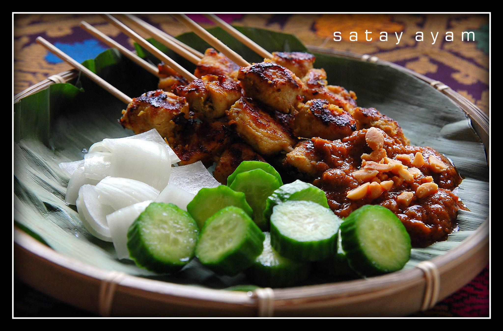
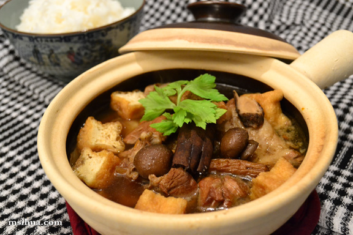
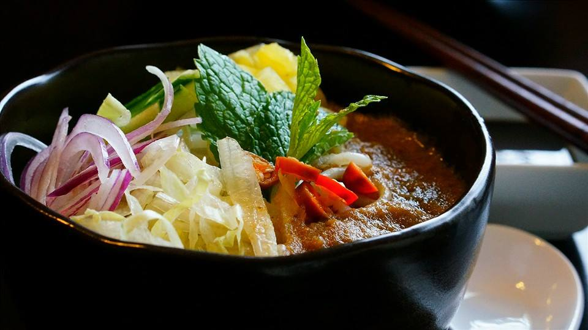

Jeen's Kitchen
板面" alt="PanMee (Chinese : 板面)"
onclick="bigImage(1)" style=" width:205px;height:160px; " />
雲吞麵" onclick="bigImage(2)" style=" width:205px;height:160px">

福建炒麵" onclick="bigImage(4)" style="width:205px;height:160px">
廣府炒" onclick="bigImage(5)" style="width:205px;height:160px">
(Chinese : 瓦煲飯)" data-title="Claypot rice
瓦煲飯
Ngah Po Fan" onclick="bigImage(6)" style="width:205px;height:160px">
瓦煲飯
Ngah Po Fan" onclick="bigImage(6)" style="width:205px;height:160px">

Spicy water spinach" alt="Kangkung belacan" onclick="bigImage(7)"
style="width:205px;height:160px">
椰浆饭" alt="Nasi lemak (Chinese: 椰浆饭)" onclick="bigImage(8)"style="width:205px;height:160px">
肉骨茶
Pork ribs soup" alt="Bak Kut Teh (Chinese : 肉骨茶) (pork ribs soup)" onclick="bigImage(9)"style="width:205px;height:160px">
Pork ribs soup" alt="Bak Kut Teh (Chinese : 肉骨茶) (pork ribs soup)" onclick="bigImage(9)"style="width:205px;height:160px">
酿豆腐" alt = "Yong tau foo (Chinese : 酿豆腐)" onclick="bigImage(10)" style="width:205px;height:160px">
Ikan Kari" onclick="bigImage(11)" style="width:205px;height:160px">
海南雞飯" data-title="Hainan chicken rice
海南鸡饭" onclick="bigImage(13)" style="width:205px;height:160px">
海南鸡饭" onclick="bigImage(13)" style="width:205px;height:160px">
咖喱面" onclick="bigImage(14)" style="width:205px;height:160px">
亞三叻沙" onclick="bigImage(15)" style="width:205px;height:160px">
炒粿条" onclick="bigImage(17)" style="width:205px;height:160px">
印度煎饼" onclick="bigImage(18)" style="width:205px;height:160px">
萝卜糕" onclick="bigImage(19)" style="width:205px;height:160px">
客家擂茶" onclick="bigImage(20)" style="width:205px;height:160px">
星洲炒米粉" onclick="bigImage(21)" style="width:205px;height:160px">
鱼生" onclick="bigImage(22)" style="width:205px;height:160px">